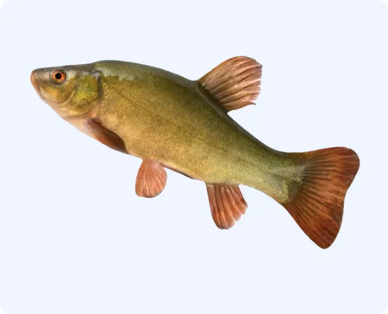

Рыба для пруда
Линь
Цена и наличие
- 4-6 см1,5 BYN / шт.В наличии
- 6-10 см3,4 BYN / шт.В наличии
- 10-15 см6,7 BYN / шт.В наличии
- 15-25 см7,2 BYN / шт.В наличии
Данные на 23.11.2026.
Характеристики
- Внешний вид
- Короткое, высокое и толстое тело покрыто мелкой, плотно прилегающей чешуёй и густым слоем слизи
- Сезонность
- Май-сентябрь
- Возраст
- Сеголетки, годовики
- Максимальный вес
- До 7.5 кг
- Продолжительность жизни
- Обычно 10–15 лет, отдельные особи могут жить до 18 лет и более
- Половая зрелость
- Самцы обычно достигают половой зрелости в возрасте 2–3 лет, самки — примерно 3–4 лет и позднее. Срок созревания зависит от температуры воды, кормовой базы и скорости роста
- Питается
- Преимущественно донными беспозвоночными: личинками водных насекомых, моллюсками, червями, мелкими ракообразными. Также употребляет детрит и небольшое количество растительной пищи. Молодь питается зоопланктоном и мелкими беспозвоночными
- Температура воды для активного питания и размножения
- Наиболее активно питается и растет в теплой воде — примерно при 20–26 °C. Нерест обычно начинается после прогрева воды примерно до 19–20 °C, наиболее благоприятные условия для размножения создаются при температуре около 20–24 °C
- Условия пруда для содержания
- Лучше всего подходят стоячие или слабопроточные пресноводные водоемы с мягким или илистым дном, участками водной растительности и укрытиями. Линь хорошо переносит временное снижение содержания кислорода, однако для стабильного роста и здоровья рыбы необходимо поддерживать нормальный кислородный режим и качество воды
- Рост
- Сеголетки 10-20 г, двухлетки 50-100 г, трехлетки 150-300 г и более
Описание
Линь — неприхотливая прудовая рыба, хорошо приспособленная к стоячей воде, мягкому илистому дну и периодическому снижению содержания кислорода.
УСЛОВИЯ ОБИТАНИЯ
Линь — пресноводная теплолюбивая рыба, хорошо приспособленная к жизни в прудах, озерах, заводях и других водоемах со стоячей или медленно текущей водой. Наиболее подходящими для него являются спокойные участки с развитой подводной и прибрежной растительностью и мягким или илистым дном, где рыба находит значительную часть естественного корма. Большую часть времени линь проводит возле дна и среди водных растений. Он хорошо переносит высокую температуру воды и временное снижение содержания растворенного кислорода, поэтому способен жить в условиях, которые хуже переносят некоторые другие виды рыб. При этом устойчивость линя к недостатку кислорода не означает, что плохое качество воды является для него нормой: продолжительный кислородный дефицит замедляет рост, ухудшает состояние рыбы и увеличивает риск зимнего замора. Постоянная проточность линю не требуется. Для хорошего содержания желательно, чтобы в пруду были растительность и спокойные мелководные зоны для кормления и размножения, а также более глубокий участок для зимовки. Линя можно содержать совместно с карпом, карасем, белым амуром и другими мирными прудовыми рыбами. При совместном зарыблении необходимо учитывать общую плотность рыбы и кормовую базу, поскольку линь и карп частично используют одинаковые донные кормовые организмы. Линь не является специализированной рыбой для очистки пруда от водорослей, ила или высшей водной растительности. Он действительно поедает детрит и донных беспозвоночных, но запуск линя сам по себе не решает проблемы заиления, зарастания или цветения воды.
РАЗМНОЖЕНИЕ
Линь способен самостоятельно размножаться в обычном пруду, если вода достаточно прогревается и в водоеме имеются подходящие нерестовые участки. В умеренном климате половое созревание обычно происходит примерно в 3–4 года, при этом самцы могут созревать несколько раньше самок. Нерест проходит в теплый период года и может продолжаться с конца весны до середины или второй половины лета. Обычно нерест начинается после прогрева воды примерно до 19–20 °C. Для размножения линь выбирает хорошо прогреваемые мелководные участки с развитой подводной растительностью. Линь не строит гнезд. Самка выметывает большое количество очень мелкой клейкой икры, которая прикрепляется к листьям, стеблям водных растений и другим подходящим поверхностям. Нерест порционный: одна самка может выметывать икру несколько раз с интервалами в течение нескольких недель. Взрослые рыбы не охраняют икру и молодь. Скорость развития икры зависит от температуры воды: при температуре около 20 °C личинки могут вылупляться примерно через 3 суток. Первое время они остаются среди растительности, а затем начинают самостоятельно питаться мелким зоопланктоном и другими доступными организмами. В отличие от белого амура и толстолобика, линю не требуется речное течение для естественного воспроизводства. При подходящих условиях он способен сформировать самовоспроизводящуюся популяцию непосредственно в частном пруду.
КОРМЛЕНИЕ
Линь — всеядная донная рыба, которая большую часть естественного корма добывает на дне и среди водной растительности. В рацион взрослых особей входят личинки водных насекомых, в том числе хирономид, моллюски, черви, мелкие ракообразные и другие донные беспозвоночные. Также линь употребляет детрит и растительный материал, однако считать его преимущественно растительноядной рыбой неправильно. Молодь сначала питается преимущественно зоопланктоном и мелкими водными организмами. По мере роста все большую роль в рационе начинают играть донные беспозвоночные. У крупных взрослых особей существенную долю питания могут составлять моллюски. При выращивании в пруду линя можно дополнительно кормить полноценными кормами для карповых рыб. Лучше использовать тонущие или медленно тонущие корма, поскольку линь преимущественно кормится возле дна. При богатой естественной кормовой базе потребность в дополнительном кормлении будет ниже. Кормовая активность значительно зависит от температуры воды. Хорошие показатели роста молоди получены при 20–26 °C, причем при полноценном рационе рост усиливался с повышением температуры в пределах этого диапазона. При похолодании потребление корма постепенно сокращается. Перекармливать линя не следует. Неиспользованный корм накапливается на дне, разлагается, ухудшает качество воды и повышает расход растворенного кислорода.
ЗИМОВКА
Линь хорошо приспособлен к зимовке в открытых водоемах и способен нормально переносить климатические условия Беларуси. По мере осеннего охлаждения воды его активность и интенсивность питания уменьшаются, после чего рыба перемещается в более спокойные глубокие участки пруда. Зимой линь становится очень малоактивным и способен находиться непосредственно возле мягкого дна или частично зарываться в ил. Обмен веществ в холодной воде сильно замедляется, поэтому потребность в пище становится минимальной и специальное зимнее кормление обычно не требуется. Несмотря на высокую устойчивость линя к временному снижению содержания кислорода, длительный зимний дефицит кислорода остается опасным. Особенно высокий риск возникает в небольших, сильно заиленных и заросших прудах, где подо льдом продолжается разложение большого количества органики. Для надежной зимовки необходимо обеспечить достаточно глубокий незамерзающий участок и стабильный кислородный режим. При угрозе зимнего замора в небольших или плотно зарыбленных прудах рекомендуется использовать аэрацию. Весной после прогрева воды линь постепенно возвращается к активному питанию.